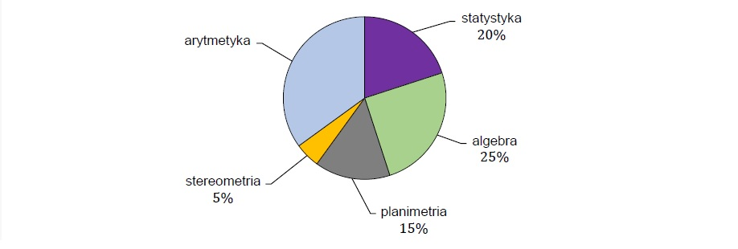
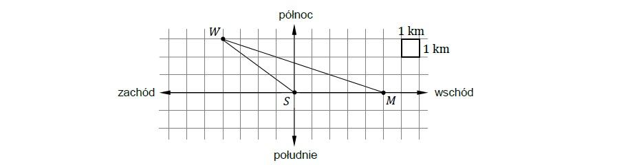

Test z matematyki składa się z \( 40 \) zadań. Na diagramie przedstawiono procentowy podział liczby zadań w teście na zadania z pięciu działów: algebry, planimetrii, stereometrii, arytmetyki, statystyki.

Dokończ zdanie. Wybierz właściwą odpowiedź spośród podanych.
Liczba zadań z arytmetyki w tym teście jest równa
Ola otwiera swoją szafkę za pomocą czterocyfrowego kodu \( YXXY \), gdzie \( X \) jest największym wspólnym dzielnikiem liczb \( 18 \) i \( 27 \), a \( Y \) jest najmniejszą wspólną wielokrotnością liczb \( 2 \) i \( 4 \).
Jaki jest kod do otwarcia szafki Oli? Wybierz właściwą odpowiedź spośród podanych.
Dane są cztery liczby:
\( w = \sqrt{100 - 64} - 2 \)
\( x = 12 - \sqrt{64 + 36} \)
\( y = \sqrt{25 - 16} - 3 \)
\( z = 7 - \sqrt{9 + 16} \)
Która z tych liczb jest równa \( 0 \)? Wybierz właściwą odpowiedź spośród podanych.
Dokończ zdanie. Wybierz właściwą odpowiedź spośród podanych.
Wartość wyrażenia \( 2^5 \cdot 3 \cdot 3^4 \cdot 2^3 \) jest równa wartości wyrażenia
W pewnej hodowli rasowy kocur kosztuje \( x \) złotych, a rasowa kotka kosztuje \( y \) złotych. Janek kupił z tej hodowli rasowego kocura ze zniżką \( 40\% \) oraz rasową kotkę ze zniżką \( 20\% \).
Które wyrażenie poprawnie opisuje, ile złotych zapłacił Janek za te koty? Wybierz właściwą odpowiedź spośród podanych.
W pudełku było jedenaście kul ponumerowanych kolejnymi liczbami naturalnymi od \( 1 \) do \( 11 \). Z tego pudełka wylosowano pięć kul. Suma liczb na dowolnych dwóch kulach, które pozostały w pudełku, jest parzysta.
Uzupełnij zdania. Wybierz odpowiedź spośród oznaczonych literami A i B oraz odpowiedź spośród oznaczonych literami C i D.
Po losowaniu w pudełku zostały wyłącznie kule ponumerowane liczbami
Suma liczb na pięciu wylosowanych kulach jest równa
Do \( 10 \) pustych koszy włożono jabłka i pomarańcze, łącznie \( 400 \) sztuk tych owoców. W każdym koszu łączna liczba owoców jest taka sama oraz w każdym koszu liczba jabłek jest o \( 6 \) większa od liczby pomarańczy.
Ile sztuk jabłek jest łącznie w tych \( 10 \) koszach? Wybierz właściwą odpowiedź spośród podanych.
Sumę \( S = 1 + 2 + 3 + \ldots + n \) kolejnych liczb naturalnych od \( 1 \) do \( n \) można obliczyć ze wzoru
\( S = \frac{1}{2}n(n + 1) \)
Uzupełnij zdania. Wybierz odpowiedź spośród oznaczonych literami A i B oraz odpowiedź spośród oznaczonych literami C i D.
Suma stu kolejnych liczb naturalnych od \( 1 \) do \( 100 \) jest równa
Wzór na sumę \( S \) po poprawnym przekształceniu ma postać
Średnia arytmetyczna dwóch liczb \( x \) i \( y \) jest równa \( 4 \), a średnia arytmetyczna trzech liczb \( x \), \( y \), \( z \) jest równa \( 5 \).
Dokończ zdanie. Wybierz właściwą odpowiedź spośród podanych.
Liczba \( z \) jest równa
Dany jest trójkąt równoboczny o boku długości \( 2 \) cm.
Oceń prawdziwość podanych zdań. Wybierz P, jeśli zdanie jest prawdziwe, albo F – jeśli jest fałszywe.
Wysokość tego trójkąta jest równa \( \sqrt{3} \) cm.
Pole tego trójkąta jest równe \( \sqrt{3} \) cm\( ^2 \).
Kąty wewnętrzne czworokąta oznaczono: \( \alpha \), \( \beta \), \( \gamma \) oraz \( \delta \). Miara kąta \( \beta \) jest o \( 70° \) większa od miary kąta \( \alpha \), miara kąta \( \gamma \) jest dwukrotnie większa od miary kąta \( \alpha \). Kąt \( \delta \) jest kątem prostym.
Dokończ zdanie. Wybierz właściwą odpowiedź spośród podanych.
Miara kąta \( \beta \) jest równa
Na kartce w kratkę Jurek wykonał rysunek. Na tym rysunku punkty \( M \), \( W \), \( S \) oznaczają położenia odpowiednio: muzeum, wieży widokowej oraz schroniska. Wieża widokowa znajduje się \( 3 \) km na północ i \( 4 \) km na zachód od schroniska. Muzeum znajduje się \( 5 \) km na wschód od schroniska.

Oceń prawdziwość podanych zdań. Wybierz P, jeśli zdanie jest prawdziwe, albo F – jeśli jest fałszywe.
Odległość w linii prostej schroniska od muzeum jest równa odległości w linii prostej schroniska od wieży widokowej.
Odległość w linii prostej muzeum od wieży widokowej jest mniejsza niż \( 10 \) km.
Przekątna \( AD \) dzieli pięciokąt \( ABCDE \) na trójkąt \( ADE \) i na kwadrat \( ABCD \) (zobacz rysunek). Pole trójkąta \( ADE \) jest równe \( 28 \), a wysokość poprowadzona z wierzchołka \( E \) na bok \( AD \) jest równa \( 7 \).
Dokończ zdanie. Wybierz właściwą odpowiedź spośród podanych.
Pole kwadratu \( ABCD \) jest równe
Trzy jednakowe sześciany o krawędzi długości \( 5 \) ustawiono jeden na drugim i otrzymano prostopadłościan (zobacz rysunek).
Dokończ zdanie. Wybierz właściwą odpowiedź spośród podanych.
Pole powierzchni całkowitej otrzymanego prostopadłościanu jest równe